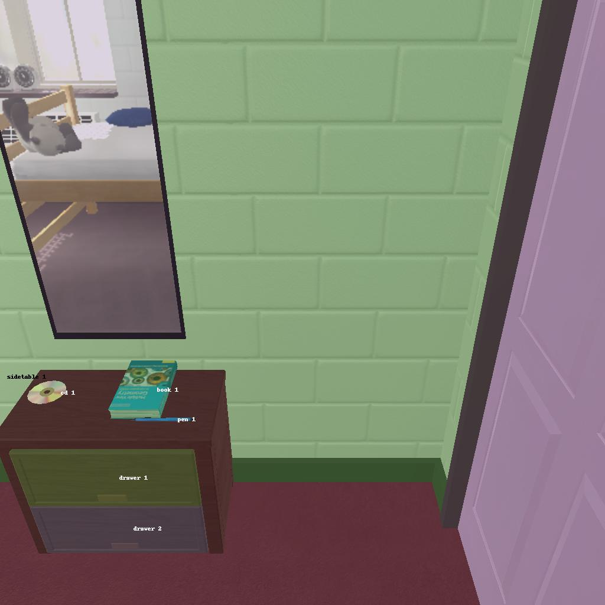

---------------------------------------------------------task: 8---------------------------------------------------------
--------------------------------------------------------------------------------------------------------------------------------------------------------------------
--------------------------------------------------------------------------------------------------------------------------------------------------------------------
Step:--------------------------------------------------------------------------11-------------------------------------------------------------------------------
----------------------------------------
VLM Prompt:
Image1:
**Instruction**
1. Analyze the provided image to identify all visible household objects, focusing on those relevant to the task description "put some laptop on desk."
2. Use the analysis of the image and the task hint "The agent must find an object of the desired type, pick it up, find the correct location to place it, and put it down there." to answer the question: what is the most reasonable action in the choices for the task description "put some laptop on desk"?
4. Decide and write the answer using the template: The answer is: (i): , where i is the real number. If there is no desired object in the image, search every place based on **Initial Observation** to find the object. And if no one is exactly correct, choose a similar answer.
**Initial Observation**
You are in the middle of a room. Looking quickly around you, you can see bed (1), garbagecan (1), desk (1), sidetable (1), drawer (1-5), laundryhamper (1)
**Answer Choices**
(1): go to bed 1
(2): go to garbagecan 1
(3): go to sidetable 1
(4): go to drawer 2
(5): go to laundryhamper 1
(6): go to drawer 3
(7): go to drawer 4
(8): go to drawer 5
(9): open drawer 1
(10): close drawer 1
(11): examine drawer 1
**Answer**
Let's think step by step by following the instructions.
----------------------------------------
----------------------------------------
Original Response:
The task description is "put some laptop on desk," so we need to find a laptop. From the initial observation, we know there is a desk (1) in the room. The image provided shows a sidetable with no laptop on it, so we can eliminate action (3). There is no information given about laptops being in drawers, garbagecans, laundry hampers, or beds, so we can eliminate actions (1), (2), (4), (5), (6), (7), and (8). Actions (9), (10), and (11) are related to drawer 1, but there's no indication a laptop would be inside drawer 1.
Since the image and initial observation do not provide enough information about the location of a laptop, the most reasonable action would be to search every place based on initial observation to locate the laptop. Once the laptop is found, the agent can then proceed to put it on the desk as per the task description.
The answer is: search every place based on initial observation to find the laptop.
----------------------------------------
----------------------------------------
>>> Refine Original VLM Response and Get Pure Action: No action
----------------------------------------
-----------------------------------------------------------------
Running time: 8.814516067504883 seconds
Total Money: 2.454660000000001
-----------------------------------------------------------------
-----------------------------------------------------------------
Text Observation:Nothing happens.
-----------------------------------------------------------------
UNSUCCEED